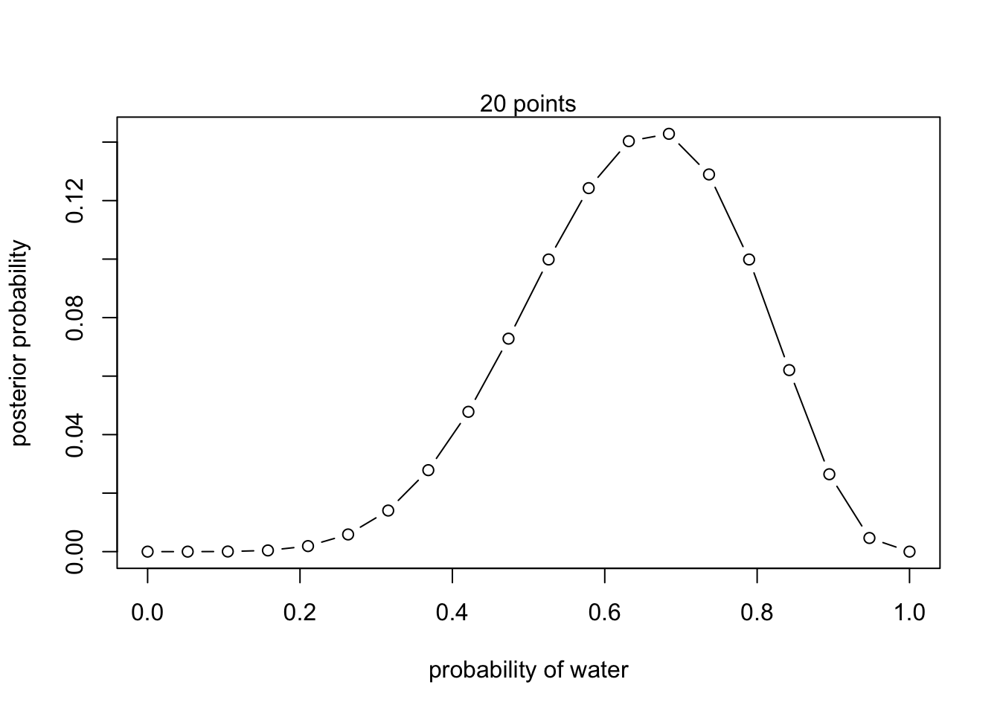
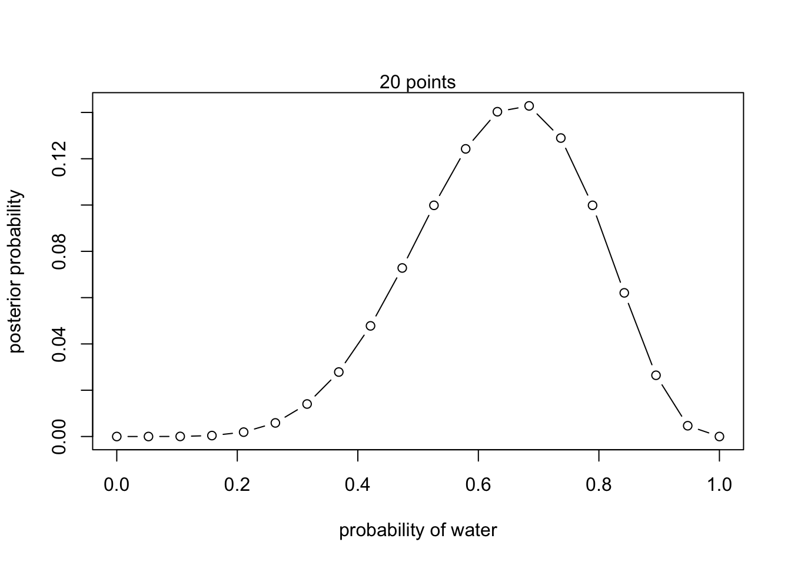

plot(theta_grid, posterior, type="b",
xlab="probability of water", ylab="posterior probability")
mtext("20 points")
Exploring the binomial model and it’s implementation in R
Let’s now apply this knowledge practically to solve a ‘real-world’ problem. We will specifically be taking the ‘globe-tossing’ exercise from Richard McElreath’s book: Statistical rethinking: A Bayesian course with examples in R and Stan1.
“Suppose you have a globe representing our planet, the Earth. This version of the world is small enough to hold in your hands. You are curious how much of the surface is covered in water. You adopt the following strategy: You will toss the globe up in the air. When you catch it, you will record whether or not the surface under your right index finger is water or land. Then you toss the globe up in the air again and repeat the procedure. This strategy generates a sequence of surface samples from the globe.
The first nine samples might look like:
\[W L W W W L W L W\]
where \(W\) indicates water and \(L\) indicates land.
In this example you observe six \(W\) (water) observations and three \(L\) (land) observations. Call this sequence of observations the data.”
So, the question is, “What proportion of the globe is covered in water and land?”
Firstly, let’s look at the frequentist perspective. The frequentist treats probability as the long-run frequency of events in repeated experiments.
In our globe-tossing example, this means:
\[p(\text{water}) = \lim_{n \to \infty} \frac{\text{number of water observations}}{n}\]
where \(n\) is the total number of tosses.
For our observed data of 9 tosses with 6 water observations, a frequentist would therefore calculate:
\[\hat{p}(\text{water}) = \frac{6}{9} \approx 0.67\]
This suggests approximately 67% of the Earth’s surface is water - \(\hat{p}\) indicates this is an estimate of the true proportion.
Our goal is to make a similar estimate using the Bayesian framework.
McElreath suggests that when constructing any model (including Bayesian), one should incorporate three steps:
1. Data story: Motivate the model by narrating how the data might arise.
2. Update: Educate your model by feeding it the data.
3. Evaluate: All statistical models require supervision, leading possibly to model revision.
In the case that the model needs revising, then we generate a new data story.
Practically, this workflow may look like this:

Workflow diagram of Bayesian model development and analysis, implemented in Stan
We start with data from our experiment. From our earlier workshop, we know to firstly clean and reshape the data where appropriate (for example by removing missing trials), and to do some exploratory analysis.
The upper portion shows the model. This is our data story, i.e., we define our data, parameters and the model structure.
The central red box represents the sampling methods that approximate the posterior. This is where the actual model fitting occurs using methods like Markov Chain Monte Carlo, which we explore in future workshops.
The end goal of modeling is to determine some likelihood for our latent parameter given the observed data. We can evaluate and refine our modeling at various stages through model diagnosis, evaluation and revision.
With this process now in mind, let’s construct our data story.
Let’s firstly make a number of statements about the parameter of interest and how the data are generated. We can state that:
This is our story. The next stage is to then translate this story into a formal probability model.
Let’s start with Bayes’ theorem as applied to our globe-tossing example:
\[p(\theta|D) = \frac{p(D|\theta)p(\theta)}{p(D)}\] To determine the likelihood \(p(D|\theta)\), we need to consider our data-generating process:
We’re interested in the total number of successes (water observations) in a fixed number of trials.
You may have thought that this case is very similar to a coin flip, and that’s because it is! The data generating process is the same, whereby each trial can produce one of two outcomes, and are independent of one another. We can therefore use the binomial distribution to determine the likelihood.
For our data \(D\) consisting of \(W\) water observations out of \(N\) total tosses, the likelihood is therefore:
\[p(D|\theta) = p(W|N,\theta) = \binom{N}{W}\theta^W(1-\theta)^{N-W}\] This binomial likelihood represents the probability of observing exactly \(W\) water outcomes in \(N\) tosses, given some value of \(\theta\).
For our specific example with 6 water observations out of 9 tosses:
\(N = 9\) (total tosses)
\(W = 6\) (water observations)
Our likelihood function is:
\[p(D|\theta) = \binom{9}{6}\theta^6(1-\theta)^{3}\]
This function tells us, for any proposed value of \(\theta\), how likely we were to observe our actual data of 6 water observations in 9 tosses.
Here’s a summary of this process:
From our data-generating process, we declare the appropriate variables and the likelihood function linking data to parameters
Remember the Bayesian maxim from the last workshop:
“Probability is orderly opinion and inference from data is nothing other than the revision of such opinion in the light of relevant new information.”
So, in our example, how might our estimates of \(\theta\) change (be updated) trial by trial?
Before the first globe-toss, we have some initial plausibility of each possible value of \(\theta\). This may be a uniform prior, given that we do not have any reason to think it is biased towards a particular value. In the graph below, this is represented by the dashed horizontal line. However, after seeing the first toss, which is a \(W\), the model updates the plausibilities to the solid line.
The plausibility of \(\theta = 0\) has now fallen to exactly zero — the equivalent of “impossible” because we now know there is some water. Likewise, the plausibility of \(\theta > 0.5\) has increased. This is because there is not yet any evidence that there is land on the globe, so the initial plausibilities are modified to be consistent with this.
We then toss the globe for a second time, and the result is land, \(L\).
Now there is less evidence that the value of \(\theta\) is greater than it currently is, whilst the evidence that it is less has now increased.
Note that the value with the highest plausibility is 0.5, since we have observed exactly one water and one land observation out of two samples.
And after a third toss, which is water again:
Now there is more evidence that the value of \(\theta\) is greater than currently estimated.
The entire sample of nine tosses \((W L W W W L W L W)\) would therefore look like this:
In general, Every time a \(W\) is seen, the peak of the plausibility curve moves to the right, towards larger values of \(\theta\). Every time an \(L\) is seen, it moves in the other direction.
The maximum height of the curve also increases with each sample, meaning that fewer values of \(\theta\) amass more plausibility as the amount of evidence increases. Notice that every updated set of plausibilities becomes the initial plausibilities for the next observation. This is the Bayesian update, where the posterior in the previous trial becomes the prior in the next.
These distributions importantly do not rule out the possiblility of alternative values of \(\theta\). After the ninth sample, whilst the maximum plausibility is at around 2/3, there is still a small possibility that the value could still be 0.2, or 0.9.
You can see the importance of the prior through three distinct scenarios, all sharing the same likelihood function but employing different priors:
The first row demonstrates what happens when we use a flat or uniform prior distribution. In this case, the posterior distribution closely mirrors the likelihood function, as we’re letting the data speak for itself with minimal prior influence.
The middle row introduces a prior in the form of a step function, which effectively rules out any possibility of \(θ\) being less than 0.5. This represents a strong prior belief that fundamentally constrains our posterior distribution, forcing it to be zero for values less than 0.5 regardless of what the data suggests.
The final row shows what happens with an informative prior centered at 0.5, taking the form of a bell-shaped curve. In this prior, we believe values around 0.5 are more likely, but we’re not completely ruling out other possibilities. The resulting posterior distribution represents a compromise between this prior belief and the observed data, with its peak shifted slightly compared to the likelihood function.
We now understand the process of Bayesian updating; the updating of the prior to the posterior, given the likelihood. But how exactly does this happen?
Because the globe-tossing case is quite straight-forward, as there is only a single parameter that we need to estimate \((\theta)\), that we have a relatively simple model (the binomial model), and we only have a few data points (9), we can solve this using grid approximation.
Grid approximation works by discretizing (breaking up) the continuous parameter space into a finite number of points.
Remember the the denominator of Bayes’ theorem for discrete versus continuous parameters:
For discrete parameters:
\[p(\theta|D) = \frac{p(D|\theta)p(\theta)}{\sum_{\theta} p(D|\theta)p(\theta)}\] And for continuous parameters:
\[p(\theta|D) = \frac{p(D|\theta)p(\theta)}{\int p(D|\theta)p(\theta)d\theta}\] In our globe-tossing example, instead of considering every possible value of \((\theta)\) between 0 and 1 (which would be infinite), we instead create a discrete grid of points between these values. We might break this up into 10 or 100 equally spaced points where each point represents a possible value for the proportion of water on the globe.
This discretization is what makes the problem computationally tractable - instead of having to integrate over a continuous space (which can be mathematically challenging or impossible), we just need to calculate and sum values at these finite points.
However, this is also what makes it an approximation - we’re essentially trading some precision for computational feasibility. The finer our grid (more points), the better our approximation, but the more calculations we need to perform.
Grid approximation will mainly be useful as a tool to understand the nature of Bayesian updating. But in most of your real modeling, grid approximation isn’t practical. The reason is that it scales very poorly as the number of parameters increases.
In general, grid approximation follows four steps:
For our globe tossing example, we use the binomial distribution as our likelihood function:
\[p(w|N,\theta) = \binom{N}{w}\theta^w(1-\theta)^{N-w}\] where:
We can implement this in R by coding a grid approximation using 20 points: ::: {.cell}
rm(list=ls())
# Define our grid parameters
theta_start <- 0; theta_end <- 1; n_grid <- 20
# We observe a total of 6 water observations out of a total of 9 trials
w <- 6; N <- 9
# Create a grid of theta values
theta_grid <- seq(from = theta_start, to = theta_end,
length.out = n_grid)
# Define prior (using uniform prior)
prior <- rep(1, n_grid)
# Compute likelihood at each value in grid
likelihood <- dbinom(w, size = N, prob = theta_grid)
# Compute product of likelihood and prior
unstd.posterior <- likelihood * prior
# Standardize the posterior so it sums to 1
posterior <- unstd.posterior / sum(unstd.posterior):::
The key line is likelihood <- dbinom(w, size = N, prob = theta_grid) which calculates the likelihood from the binomial function for each value of \(\theta\).
In other words, we are answering the question: “What is the likelihood that \(\theta\) is any of these values \(\theta \in {0, 0.05, 0.10, ..., 0.95, 1.00}\), given that we have observed 6 water observations from 9 samples?
Let’s now plot this posterior distribution:
plot(theta_grid, posterior, type="b",
xlab="probability of water", ylab="posterior probability")
mtext("20 points")
The code for running the grid approximation is located within _scripts/binomial_globe_grid.R
1. Try changing the value of a few of the parameters, or indeed the number of grid points, and see the effect it has on the shape of the posterior.
2. Plot the unstandardized posterior. How does it differ from the standardized posterior?
plot(theta_grid, unstd.posterior, type="b",
xlab="probability of water", ylab="posterior probability")
mtext("20 points")
In this example, the use of the binomial distribution may have been fairly intuitive, given that the discrete data is generated from a ‘globe-tossing’ process, which is equivalent to a coin flip.
But what if we have data of a different kind? What if we have some continuous height data from a group of participants, or neuron spiking data from an cellular recording of brain activity?
More generally, how are we supposed to know which likelihood function to use from the data that we have?
In the real world, data can be described by many different distributions:
| Distribution Type | Parameters | Description | Example |
|---|---|---|---|
| Discrete Distributions | |||
| Bernoulli | p (probability) | Models binary outcomes | Coin toss |
| Binomial | n (trials), p (probability) | Sum of independent Bernoulli trials | Heads in 10 coin tosses |
| Poisson | λ (rate) | Events in fixed interval | Emails per hour |
| Continuous Distributions | |||
| Normal | μ (mean), σ² (variance) | Bell-shaped curve | Population heights |
| Exponential | λ (rate) | Time between events | Time until next bus |
| Gamma | α (shape), β (rate/scale) | Generalized exponential | Time until multiple events |
| Beta | α, β (shape) | Probabilities in [0,1] | Bayesian priors |
| Student’s t | v (degrees of freedom) | Heavier tails than normal | Small-sample testing |
| Other Notable | |||
| Cauchy | location, scale | Heavy-tailed, undefined mean | Physics resonance |
| Multinomial | n (trials), pᵢ (probabilities) | Multi-category binomial | Multi-choice polls |
But thankfully, we dont need to memorize them all!
This decision tree, created by Ben Lambert2, is a useful guide in determining which likelihood to use given the type of data that you have:
This may also seem overwhelming, but it is most likely that in your specific work, you will only ever use a specific sub-set of these distributions. For example, in the field of psychology and cognitive neuroscience, and specifically concerning the analysis of human behavioural data, the following distributions are most commonly used:
Ben also is the creator of The Distribution Zoo which allows for users to interactively generate different distributions. It covers a wide variety of distributions across bth discrete and continuous data, and is particularly useful for seeing the influence of changing parameter values on the distribution shape.
The goal with likelihood functions is not to memorize everything. The goal is knowing where to start, and building intuition on which distribution to use given your data.